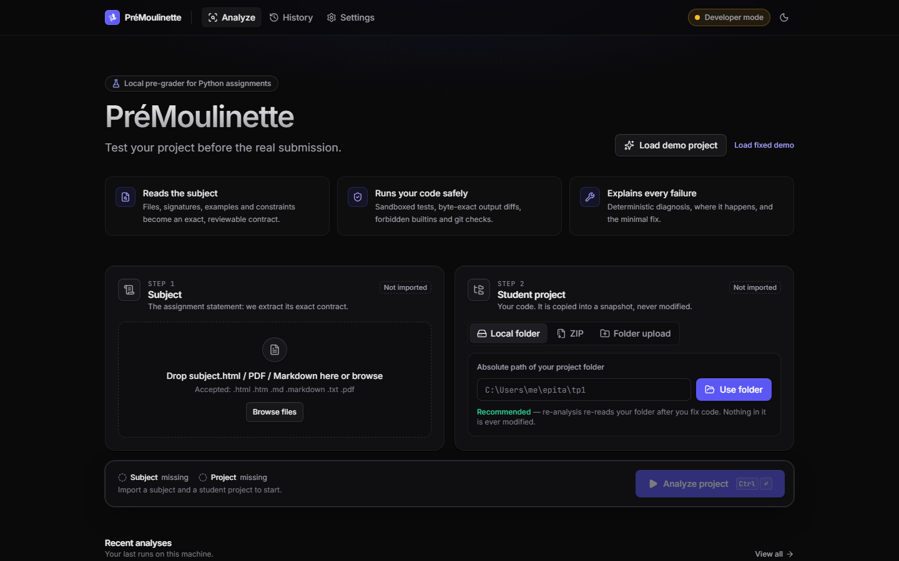

A
Glisse ici le fichier du SUJET(la consigne enregistrée avec Ctrl + S)
1
2
3
1. Clique sur « Local folder »
2. Clique dans la case blanche et colle l'adresse de ton dossier (Ctrl + V)
3. Clique sur « Use folder »
4
4. Quand les 2 cases ont un ✓ vert : clique ici pour vérifier ton TP